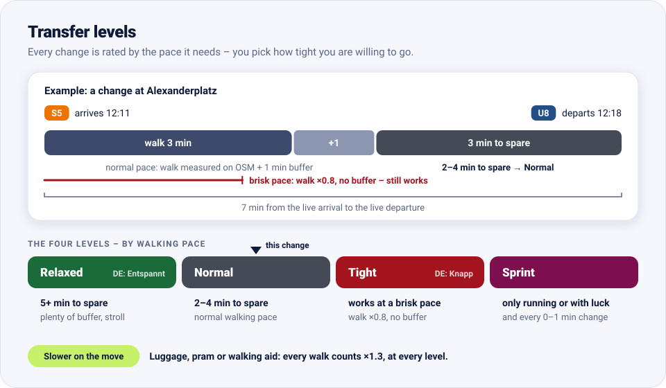
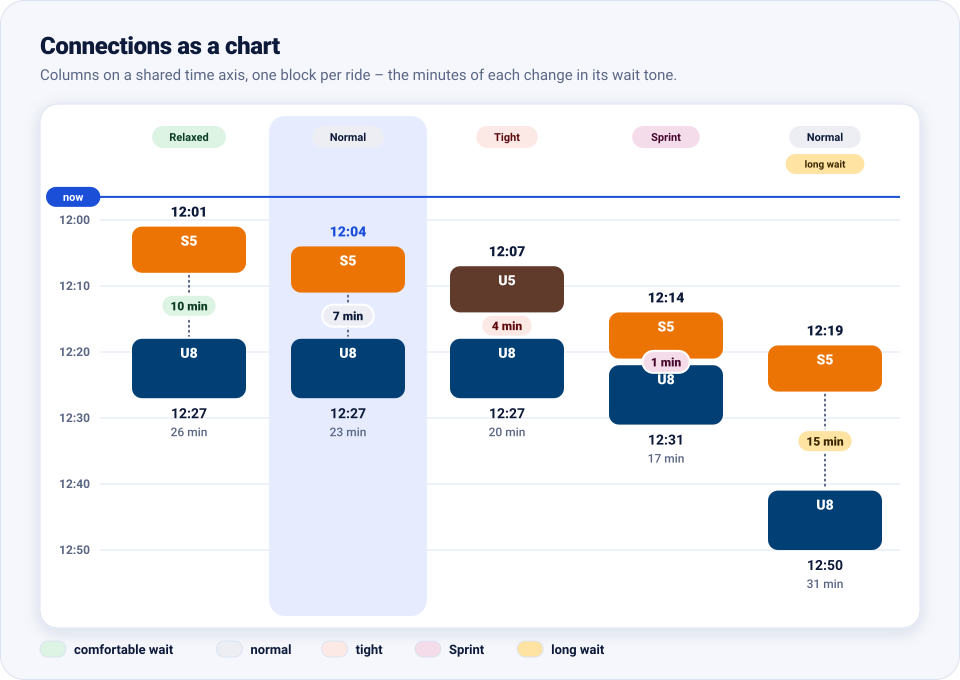
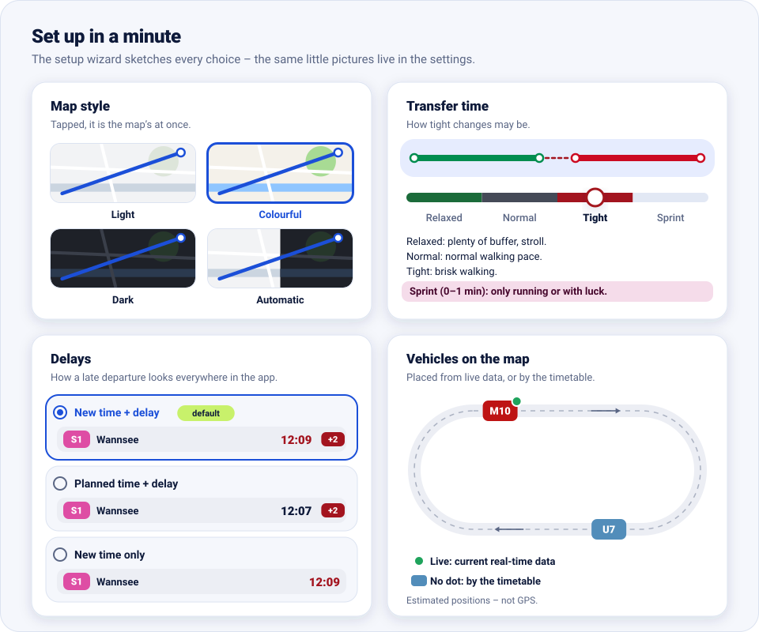
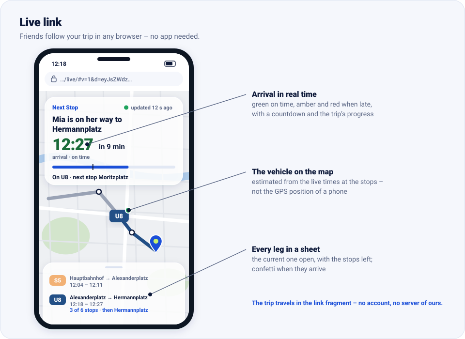
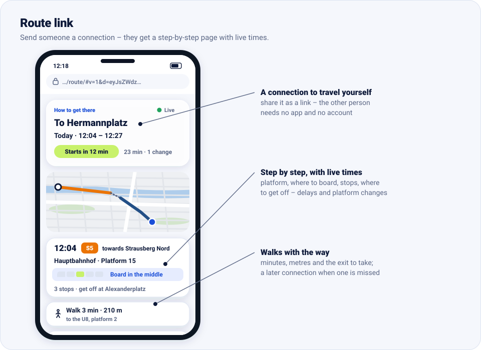
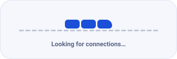

Transfers by walking pace
Every change is relaxed, normal, tight (brisk pace) or sprint (only running or with luck) – from live times and the real walk. You set how tight you go.
Next Stop is a public transport app for Android and Wear OS. It knows how long a change really takes, where to board, when a faster way turns up and when to get off. Berlin first, all of Germany on board.
No release yet – the app, the watch app and the live and route pages already work.
12:04 – 12:27 · 23 min · 1 change
Most journey planners stop caring the moment you pick a connection. Next Stop keeps going – built on open data, with no account and no server of its own.
Every change is relaxed, normal, tight (brisk pace) or sprint (only running or with luck) – from live times and the real walk. You set how tight you go.
Measured on the station’s OpenStreetMap footways: stairs, lifts and platforms – not straight lines.
Next step, countdown and stops left with live times – in the app and as a live notification.
“Board at the front, middle or rear” – and be first at the stairs for your connection.
Keeps searching while you ride and speaks up when a faster way turns up.
Tiles, a complication, live trip pages, a map and standalone search on the wrist – with a get-off buzz.
Friends follow your trip in any browser – or get a connection as steps to travel themselves.
Station data for all 16 states from OpenStreetMap, timetables nationwide through Transitous – long-distance and coaches included.
No account, no ads, no tracking – and no server of ours in between.
The ideas behind the app in a few pictures – the way they look in the app, too.





Both pages are static. The trip lives in the link fragment, which browsers never send to a server.
Short, soft and never in the way – and off when your system asks for reduced motion.



Next Stop is licensed under the GNU GPL 3.0. All of the code – the app, the watch app, the web pages and the OpenStreetMap pipeline – is public on GitHub. Report bugs, bring ideas, build along: welcome.
Code on GitHubYes. The app is free and open source (GPL-3.0) – no ads, no in-app purchases, no subscription.
Berlin and Brandenburg in the most depth (VBB/BVG, boarding hints, lifts). Timetables cover all of Germany through Transitous, long-distance trains and coaches included; station data for all 16 states comes from OpenStreetMap.
Timetables and real time from VBB and BVG and from Transitous (a community service built on open timetable data), maps and stations from OpenStreetMap, map tiles from OpenFreeMap, place search from Photon.
Nothing reaches us: there is no account, no analytics, no crash reporting and no server of our own. Requests go straight from your device to the timetable, map and search services you use. A shared live link carries the trip in the link fragment, which browsers never send to a server.
When it is ready. Until then you can build it yourself from the code – the README on GitHub explains how.
No. The watch app is an extra; the phone app does everything on its own.
| Data | Source | Licence |
|---|---|---|
| Map and station data | © OpenStreetMap contributors | ODbL 1.0 |
| Map tiles | OpenFreeMap | OSM data, ODbL |
| Timetables, Germany | Transitous – sources | per feed |
| Timetables, Berlin/Brandenburg | VBB HAFAS, BVG REST (v6.bvg.transport.rest) | provider terms |
| Place search | Photon (komoot) | OSM data, ODbL |